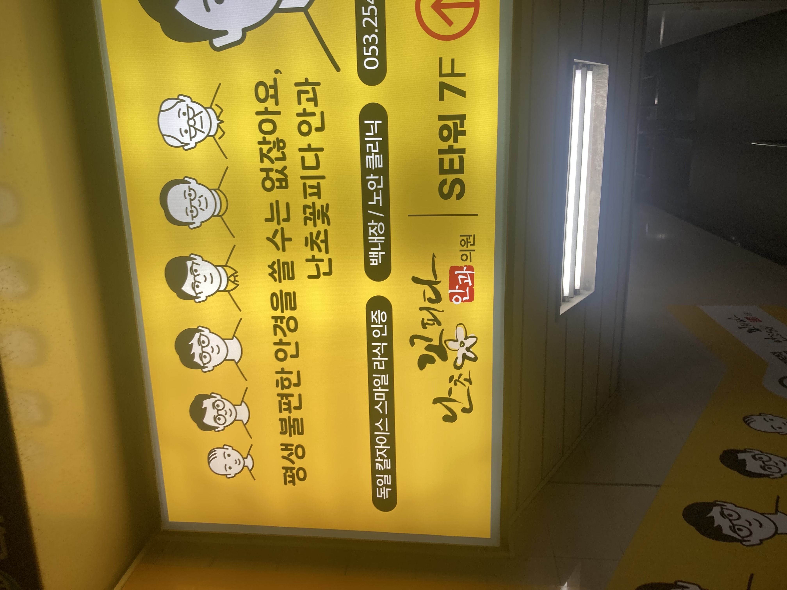
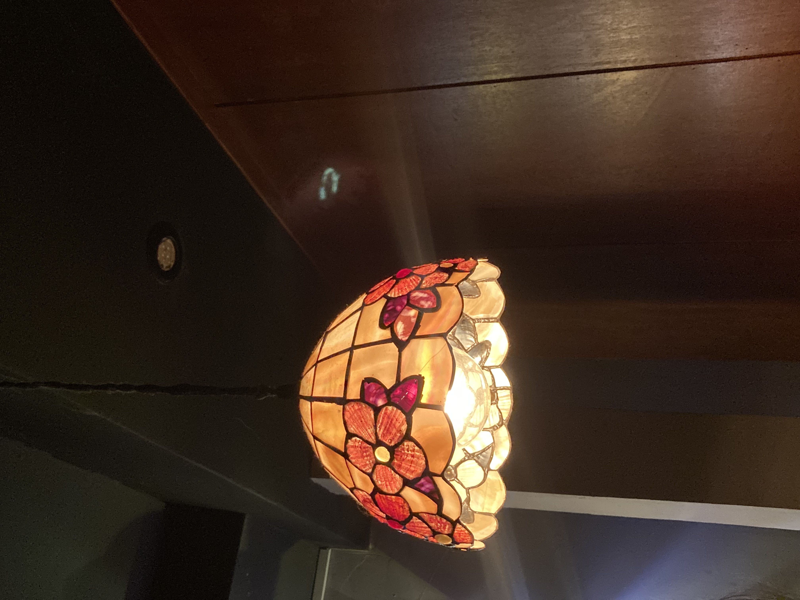
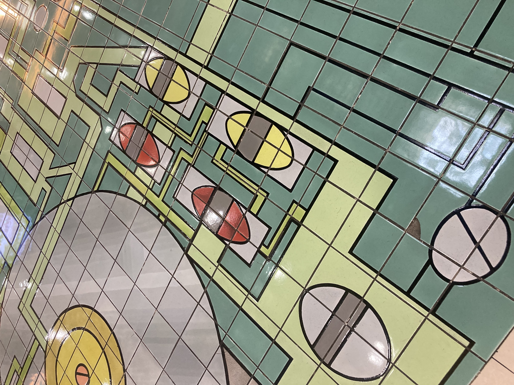
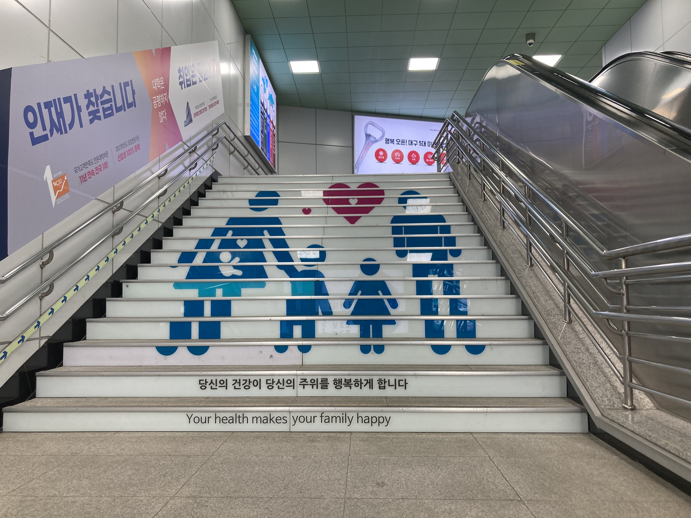
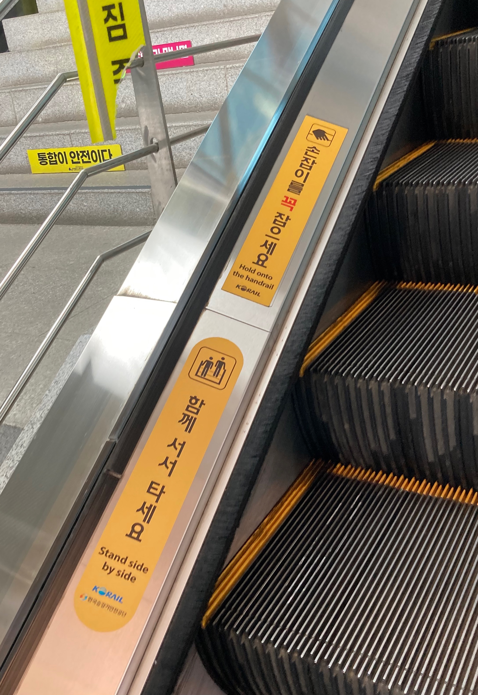
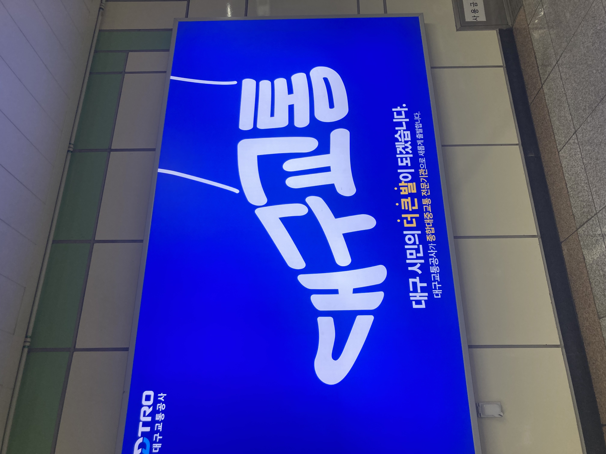
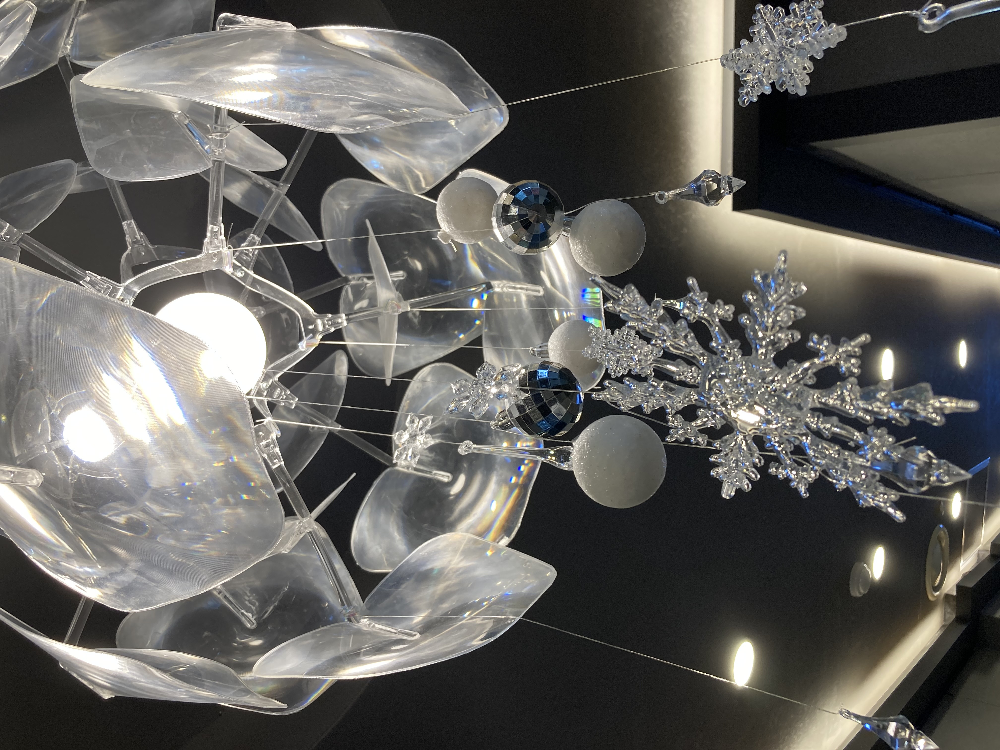
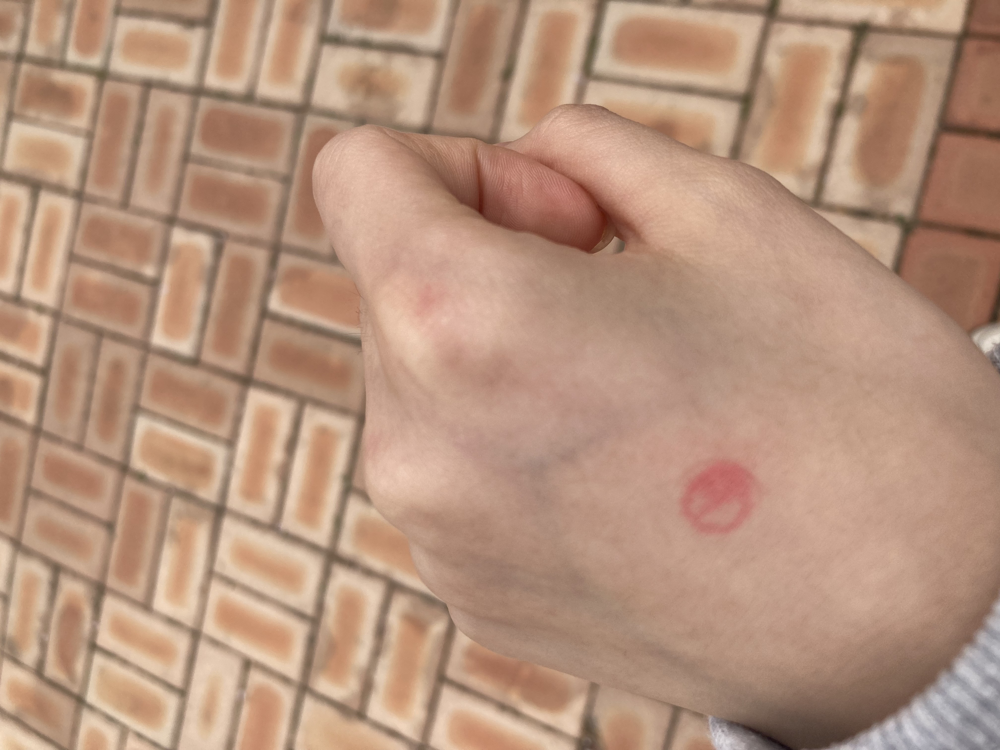
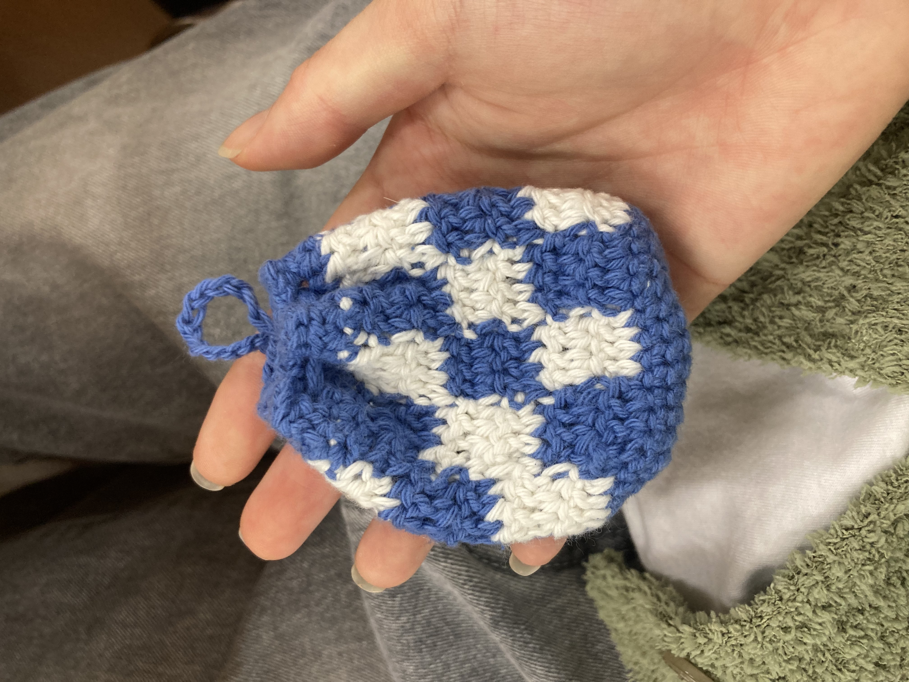

지하철 광고

지하철에서 쉽게 발견할 수 있는 전광판 광고이다. 디자인 요소 중 ‘대비’를 활용하여 광고한 점이 인상깊다. 처음 ‘숨이 트이면 생활도 트인다’라는 문구를 보았을 때 비염약 광고일 것이라는 생각이 들었다. 어둡고 밝음의 대비, 이미지의 대비를 통해 영역이 정확하게 구분되어 시선을 쉽게 이끈다. 또한 높은 대비를 이용해 사람들에게 더 오래 기억에 남을 수 있는 효과를 준다.
안과 로고
지하철을 타러 가던 중 발견한 안과 광고이다. 사진을 자세히 보면 ‘난초 꽃 피다’라는 안과 로고를 발견할 수 있다. 내 눈에 가장 먼저 들어온 것은 ‘꽃’의 받침 ‘ㅊ’을 꽃 모양으로 형상화 시킨 것이었다. 안과 이름의 의미를 디자인에 적용시켜 사람들에게 시각적으로 강렬한 인상을 남길 수 있다. 그 이미지는 우리의 시각적 기억에 더 오랫동안 남는다.
꽃 펜던트 조명
친구들과 간 술집에서 발견한 꽃 모양 펜던트 조명이다. 그 조명은 독특한 모양과 색감을 가졌다. 자연적이고 아름다운 형태인 꽃 모양이 제품에 적용되어 독특하고 매력적인 디자인을 만들어냈다. 꽃 모양 조명은 일반적인 조명보다 더 눈에 띈다. 꽃 잎모양의 구조는 빛을 부드럽게 분산 시켜 조용한 술집 분위기에 적절한 조명을 제공하였다.
반월당역 모자이크 타일
반월당역 바닥에서 발견한 모자이크 타일이다. 알록달록 다양한 색상과 무언가를 뜻하는 패턴으로 디자인 되었다. 모자이크 타일은 각각의 작은 조각들이 조합되어 다양한 디자인을 만든다. 그렇기에 넓은 공간에 생동감을 불어넣고 시각적인 흥미를 높인다. 또한 작고 세밀한 디자인이기에 공간의 깊이가 잘 느껴진다.
지하철 계단 그림
이 사진은 지하철을 타고 내린 후 계단을 올라가면서 발견한 그림이다. 이 계단은 밟으면 소리가 나는 피아노 계단이었다. 계단을 오르며 보니 계단에 새겨진 그림이 보였다. 착시효과를 일으켜 하나의 가족 그림을 만들었다. 그리고 건강이 소중하다는 의미가 담겨있었다. 착시효과는 그림이나 이미지를 특정한 각도나 관점에서 바라볼 때 발생한다.
안내 스티커
기차 승강장으로 가던 중 에스컬레이터에서 발견한 안내 스티커이다. 노란색 배경에 보색인 검은색 글자로 디자인되었다. 색 만으로도 ‘함께 서서 타세요’,‘손잡이를 꼭 잡으세요’와 같이 중요한 내용을 더 효과적으로 전달할 수 있다. 글과 같이 작은 그림이 더해져 사람들의 이해를 돕는다.
타이포그래피 로고
지하철 광고 전광판에서 발견한 타이포그래피 로고이다. ‘대구교통’이라는 글자를 시민의 발 모양으로 디자인한 점이 독특하고 재미있다. 그 밑에 ‘대구 시민의 더 큰 발이 되겠습니다.’라는 문구 없이도 발 이미지를 연상시킬 수 있기에 좋은 디자인이라는 생각이 들었다.
눈꽃 조명
미술 학원에서 발견한 독특한 모양의 눈꽃 조명이다. 투명한 방패 모양의 플라스틱이 조명을 감싸고 있어 빛을 부드럽게 분산시켰다. 또한 심미적으로 아름다운 디자인을 만든다. 처음에는 네일 팁 같다는 생각도 들었다. 대칭적이고 규칙적인 형태의 눈꽃 모양의 장식이 달려있어 더욱 화려한 분위기를 조성한다.
투표
선거일에 찍은 투표 인증 사진이다. 자세히 보면 손에 투표 도장이 찍혀있다. 도장에 디자인되어 있는 한자는 ‘점 복’자이다. 새로운 당선자를 점친다는 의미로 해석할 수 있다. 이 도장은 사회적인 의미와 가치를 지니고 있다. 그리고 투표는 중요한 행위이기에 가시성을 띄는 빨간색으로 디자인되었다.
에어팟 주머니
친구가 뜨개질로 만들어서 선물해준 에어팟 주머니이다. 내 이름이 ‘하늘’이라 소라색 실을 사용했다고 한다. 규칙적으로 반복되는 사각형의 패턴무늬가 단순하면서도 시각적으로 흥미로운 형태를 가지고 있다. 또한 소라색과 흰색의 색상대비로 인해 주목성을 증가시켰다.